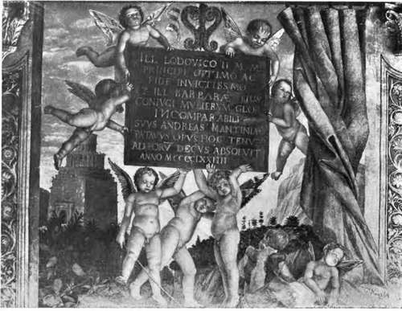

Encaustic Painting. Part 2
Description
This section is from the book "Mural Painting", by F. Hamilton Jackson. Also available from Amazon: Mural Painting: -1904.
Encaustic Painting. Part 2
* In the notes to Bonn's edition of Pliny's Natural History many of the ancient colours are identified.
Sir Humphry Davy analysed some Roman fragments of coloured plasters and found: White—several kinds of chalks and earths. Yellow—yellow ochres, which became reddish on being warmed; he also found massicot. Blue—a glass frit made of soda and oxide of copper, which, by mixing a little lime or other white, became lighter or darker; oxide of cobalt furnished more transparent blue. Red was neither a white used for fresco. Cceruleum may have been ultramarine sometimes, but was generally copper ochre. Pliny says that Vitruyius is wrong in calling red oxide of lead "sandarac." This name is properly appUed to massicot, yellow oxide of lead, and a mixture of it with minium; also to realgar, a red sulphuret of arsenic Sandyx was made of calcined sandarac and an equal proportion of rubrics. Syricum was a combination of sinopis with candyx, but according to Alius was the same as " usta," calcined white lead. Atramentum was a black colouring substance, either a deuto-sulphate of copper in solution in gallic acid, lamp-black, or calcined wine lees. Armeuium was much the same colour as cceruleum, and admitted of being dyed. Appianum was a fair imitation of chrysocolla, prepared from a green chalk. Annularian white was a kind of chalk combined with the yitreous paste " which the lower classes wear in their signet rings".
Fresco by Andrea Mantegna, in the Camera degli Sposi, in the Castle, Mantua, madder nor cochineal, more like the second than the first, a modification of purpurissimum, with which chalk was coloured; minium and vermilion.
In 1826 H. Geiger found in Italian plasters and coloured stuccoes: Bed—vermilion mixed with oxide of iron and a little carbonate of lime. light red—oxide of iron and lime. Violet—oxide of iron mixed with carbonate of lime. Yellowish brown or brownish pale yellow. Black—oxide of iron mixed with silica, a little sulphate of magnesia and of aluminum. Yellow—oxide of iron.
M. Chevreul found in the red plaster from the temple of Jupiter Olympus at Girgenti peroxide of iron, and in a yellowish stucco fine sand mixed with flakes of silica and ferruginous aluminum. A red plaster from Pompeii gave organic oxide of iron, a black one lamp-black, a yellow one yellow ochre, a white one fat lime mixed with marble (on this plaster was a red band painted with sulphuret of mercury and a green one painted with Veronese earth). The fragments found at the Palais de Justice, Paris, in 1848 showed the same colours. Hittorff says: "The colours, whether in Egypt, Etruria, Greece, Sicily, Italy, or France, are composed of the same substances, which are natural or artificial metallic oxides. Only one colour seemed to be a lake," a conclusion which the analyses reported above confirm.
The process of painting was as follows. The sticks of coloured wax resins were melted by heat into little pots, or on a palette containing them made of metal, and the tones applied to the panel with a brush. Heated irons, sometimes even red hot, were used to unite the tones. On the cooled palette the intermediate tones could be taken up and mixed with irons which were kept hot. The ancients knew how to dissolve resin in essential oils, and to mix colours with nut oil, which ^Etius says is useful to gilders and workers in encaustic, since it dries and long preserves their work " containing it." This suggests a kind of varnish, some sort of which was certainly used under the name of " atramentum".
Encaustic on ivory was worked in the following manner. The outlines of the subject were engraved with the burin, the shadows indicated, and the hollows were filled up with coloured wax, either dissolved or melted—apparently a kind of niello. For painting ships the wax was mixed with pitch, when scraped from them after long use called " zopissa." When used on walls the plaster was first made so hard and polished that it reflected objects, and was then painted either in distemper or fresco, as both Pliny and Vitruvius say, and afterwards, when the wall was quite dry, a coat of melted Punic wax mixed with a little oil was applied with a hoghair brush; then the wall was warmed with a small charcoal furnace so as to melt the wax and unite it well. It was then well polished with a roller of wax and a clean cloth, "as is done with marble statues. This operation, which the Greeks call Kavarig, covers the plaster with a breastplate of wax which preserves the colour from the light of the moon and the rays of the sun." In fact, almost every colour was employed in encaustic without restriction, such as orpiment, red lead, and other evanescent colours; wax having the property of preserving them from the action of light and from atmospherical changes. Latilla is responsible for the last statement, and as he painted in encaustic in the Banqueting-Eoom at Beaufort House, he may be supposed to have made experiments which satisfied him that it was so.
Pliny says that M. Agrippa paid the people of Cyzicus 1,200,000 sesterces for two paintings, an Ajax and a Venus. And that he ordered small paintings to be set in marble in the very hottest part of his warm baths, where they remained for a considerable time. The insertion of pictures into walls seems to have been a common practice. One, inserted by the Emperor Augustus in the Curia which he consecrated in the Comitium, was signed by the artist Nicias with a statement that it was in encaustic. Yet at the end of his catalogue of colours he says that wax is stained with all these colours for encaustic painting, a process which does not admit of "being applied to walls (!) but is in common use by way of ornament for ships of war, etc. The process was much used for the external decoration of buildings. A varnish was used in Egypt to protect the surface of paintings, made of resins, and at Hadrian's Villa at Tivoli one of wax was found.
Continue to: